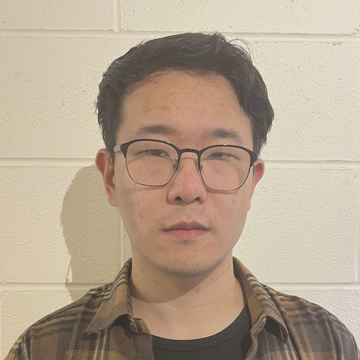

PhD Candidate in Machine Learning · UNSW Sydney
Advised by Prof. Dong Gong · Expected 2027
Building AI systems that acquire, organize, and reuse knowledge over time.
Under review MILES: Modular Instruction Memory with Learnable Selection for Self-Improving LLM Reasoning
A framework that lets a frozen LLM improve its own reasoning at test time by accumulating reusable experience, with lightweight selection heads learned from the model's own confident trajectories — no parameter updates required. Matches or outperforms prior memory-augmented reasoning methods across six benchmarks and four backbone LLMs.
NeurIPS 2025 Model Inversion with Layer-Specific Modeling and Alignment for Data-Free Continual Learning
Per-layer model inversion reduces the cost of synthesizing replay data, and contrastive feature selection aligns it with the real feature distribution — making data-free continual learning practical for large pre-trained backbones such as CLIP.
ICLR 2025 Coreset Selection via Reducible Loss in Continual Learning
Introduces reducible loss — the actual performance gain a sample provides — as a forward-pass-only criterion for selecting informative replay data, avoiding the cost of bilevel methods and naturally filtering out noisy samples.
Interspeech 2020 The HUAWEI Speaker Diarisation System for the VoxCeleb Speaker Diarisation Challenge. Renyu Wang, Ruilin Tong, Yu Ting Yeung, Xiao Chen. VoxSRC Workshop. arXiv:2010.11657
My long-term goal is to build AI systems that acquire, organize, and reuse knowledge over time — systems that learn continually, remember efficiently, and reason from accumulated experience rather than being retrained from scratch.
Across my work, a single question recurs: how should a model decide what is worth keeping, and how to reuse it, when data, memory, and compute are limited? Each of my projects is one step toward this vision — from selecting the most informative data to keep (CSReL), to reconstructing knowledge that can no longer be stored (PMI-CFS), to building language models that improve their own reasoning by accumulating reusable experience (MILES).
I organize my research around three connected themes rather than isolated papers:
How can models keep learning when data, memory, or privacy is limited?
How can models reason more reliably by spending computation at inference time?
How can systems accumulate and reuse experience to improve themselves?
The connecting thread: moving from models that remember data toward agents that accumulate and reuse experience — reliably, and without constant retraining.
Before my PhD, I was a Research Engineer at Huawei's Noah's Ark Laboratory, working on multimodal and audio learning. I review for NeurIPS, ICLR, ACM Multimedia, and Pattern Recognition, and was a Top Reviewer at NeurIPS 2025.